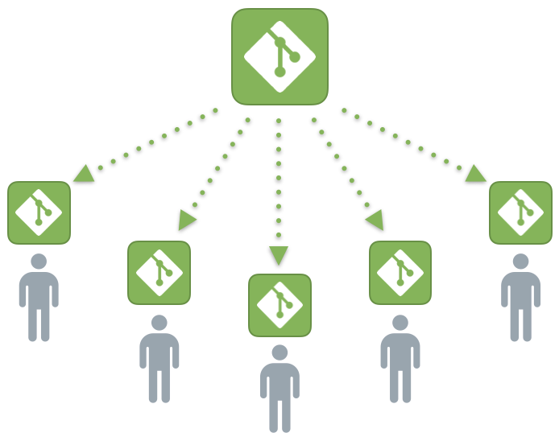

Система управления версиями (также используется определение «система контроля версий», от англ. Version Control System, VCS или Revision Control System) — программное обеспечение для облегчения работы с изменяющейся информацией. Система управления версиями позволяет хранить несколько версий одного и того же документа, при необходимости возвращаться к более ранним версиям, определять, кто и когда сделал то или иное изменение, и многое другое.
Такие системы наиболее широко используются при разработке программного обеспечения для хранения исходных кодов разрабатываемой программы. Однако они могут с успехом применяться и в других областях, в которых ведётся работа с большим количеством непрерывно изменяющихся электронных документов. В частности, системы управления версиями применяются в САПР, обычно в составе систем управления данными об изделии (PDM). Управление версиями используется в инструментах конфигурационного управления (Software Configuration Management Tools).